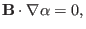
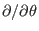
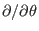

Next: Visualization of field-line-following coordinates Up: Field-line-following coordinates Previous: Field-line-following coordinates
Noting that , the magnetic field in Eq. (250) can be further written
|  | (278) |
| (279) |
| (280) |
Using Eq. (277), the magnetic differential operator
in the new coordinate system
 is written
is written
It is widely accepted that turbulence in tokamak plasmas usually has
 , where
, where
 and are the
parallel and perpendicular wavenumbers, respectively. Due to this elongated
structure along the parallel direction, less grids can be used in the parallel
direction than in the perpendicular direction in turbulence simulation. In
this case, the field-aligned coordinates
and are the
parallel and perpendicular wavenumbers, respectively. Due to this elongated
structure along the parallel direction, less grids can be used in the parallel
direction than in the perpendicular direction in turbulence simulation. In
this case, the field-aligned coordinates
 provide
suitable coordinates to be used, where less grids can be used for
provide
suitable coordinates to be used, where less grids can be used for  coordinate in simulations and even some

derivatives can be neglected (high-n approximation), which simplifies the
equations that need to be solved.
coordinate in simulations and even some

derivatives can be neglected (high-n approximation), which simplifies the
equations that need to be solved.
Using Eq. (244), the definition of  in Eq.
(276) can be written as
in Eq.
(276) can be written as
yj 2018-03-09